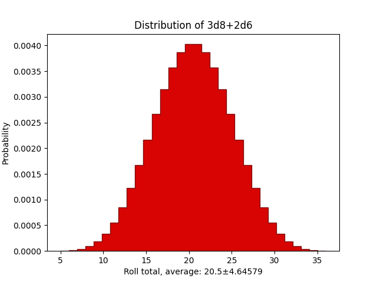

Playing tabletop online via discord? Do you feel you don't need the complexity that a VTT like Roll20 brings? You just want to roll dice in chat? Then RollBot is the tool for you.
Rollbot rolls dice and makes that easy. There are no complex and tedious to set up character sheet integrations, altough nothing is stopping you from writing one.
Rollbot uses discord slash commands: /roll and /distribution are the main ways to use it.
Thijs /roll d20+2
RollBot Thijs: 1d20{12} + 2 -> 14
Thijs I attack the orc with my mace!
Thijs /roll 1d8+2d6+1
RollBot Thijs: 1d8{4} + 2d6{1,2} + 1 -> 8
Dice rolling syntax is very straightforward and does not contain any special setup for different tabletop systems.
Thijs /roll d20
RollBot Thijs: 1d20{10} -> 10
Thijs /roll 1d20
RollBot Thijs: 1d20{1} -> 1
Thijs Multiple dice
Thijs /roll 3d8
RollBot Thijs: 3d8{3, 6, 3} -> 12
Thijs Weird dice
Thijs /roll d42
RollBot Thijs: 1d42{17} -> 17
Thijs Do some simple arithmatic:
Thijs /roll d20 + 3
RollBot Thijs: (1d20{15} + 3) -> 18
Thijs /roll d2 - 1
RollBot Thijs: (1d2{2} - 1) -> 1
Thijs /roll 3 * d20
RollBot Thijs: 3 * 1d20{7} -> 21
Thijs /roll 10 / d8
RollBot Thijs: 10 / 1d8{6} -> 1
Thijs Functions
Thijs /roll max(d20,d20)
RollBot Thijs: max(1d20{13}, 1d20{6}) -> 13
Thijs /roll min(d20,d20)
RollBot Thijs: min(1d20{18}, 1d20{19}) -> 18
Thijs Custom list of options, like the Fudge die:
Thijs /roll {-1,0,1}
RollBot Thijs: {1} -> 1
Thijs Comparisons
Thijs /roll 1 + (d20 > 5) * d10
RollBot Thijs: (1 + (1d20{15} > 5) * 1d10{2}) -> 3
Some of these might get a bit tedious to type all the time. By setting up some macros/variables you can still make RollBot convenient for whatever system you are using. These macros are user specific.
Thijs Setup advantage/disadvantage rolls for d&d5e:
Thijs /roll adv = max(d20,d20)
RollBot Thijs: adv = max(d20, d20)
Thijs /roll dis = min(d20,d20)
RollBot Thijs: dis = min(d20, d20)
Thijs Roll stealth at disadvantage!
Thijs /roll dis-3
RollBot Thijs: (dis{min(1d20{1}, 1d20{1})} - 3) -> -2
A final feature is the ability to plot distributions of dicerolls:
Thijs I crit the goblin!
Thijs /roll 3d8+2d6
RollBot Thijs: (3d8{1, 1, 1} + 2d6{1, 1}) -> 5
Thijs Are you kidding me?!
Thijs /distribution 3d8+2d6
RollBot

Thijs Pfffff....
You can get started with Rollbot in two different ways
Rollbot was fully developed in my free time. If you appreciate my work you can buy me a coffee over on Ko-Fi. Also, feel free to send suggestions or report bugs GitHub. Join the discord support server if you need any help setting things up. You can also reach me by email, 'roll AT tmiedema.com'.
©2020 Thijs Miedema